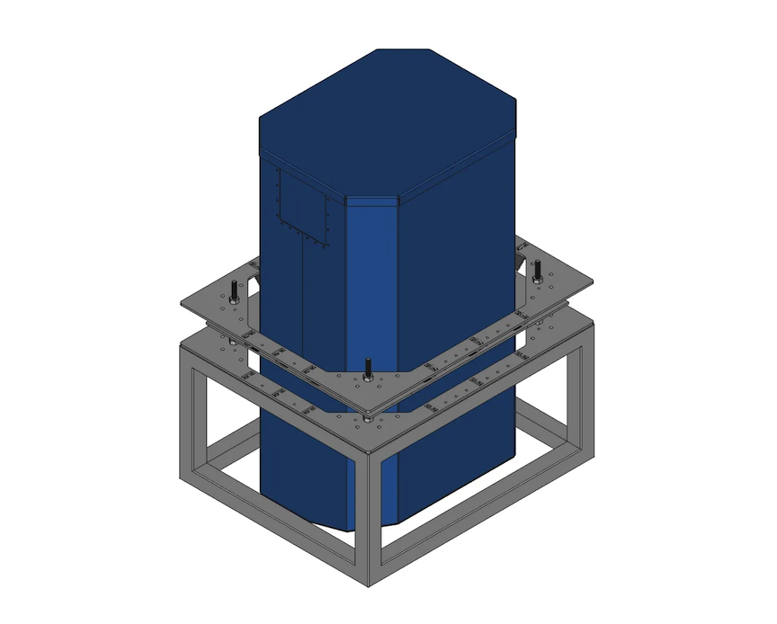
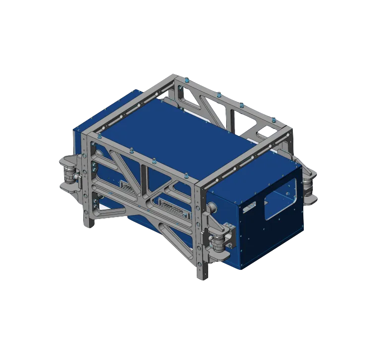
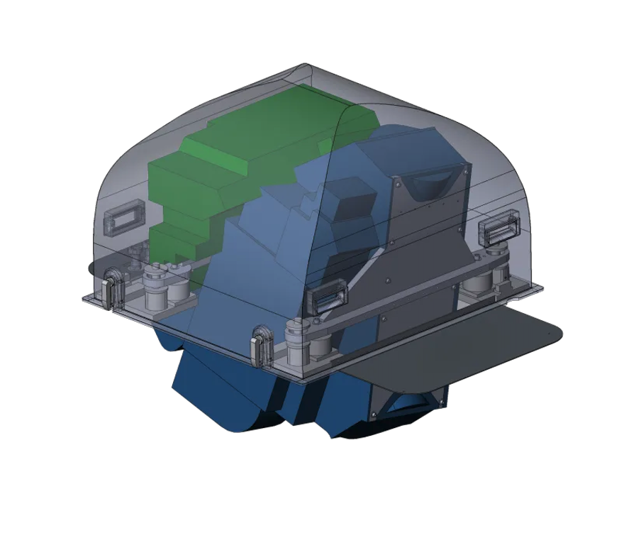
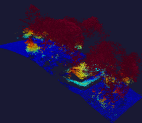
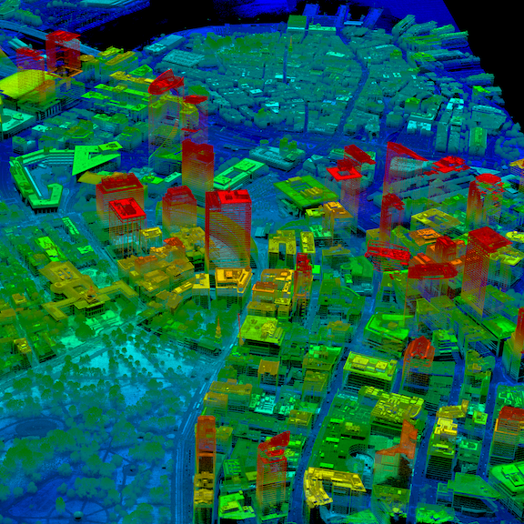
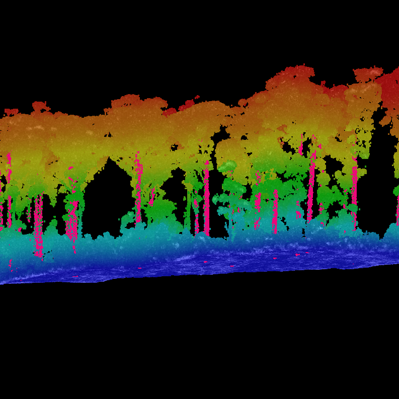
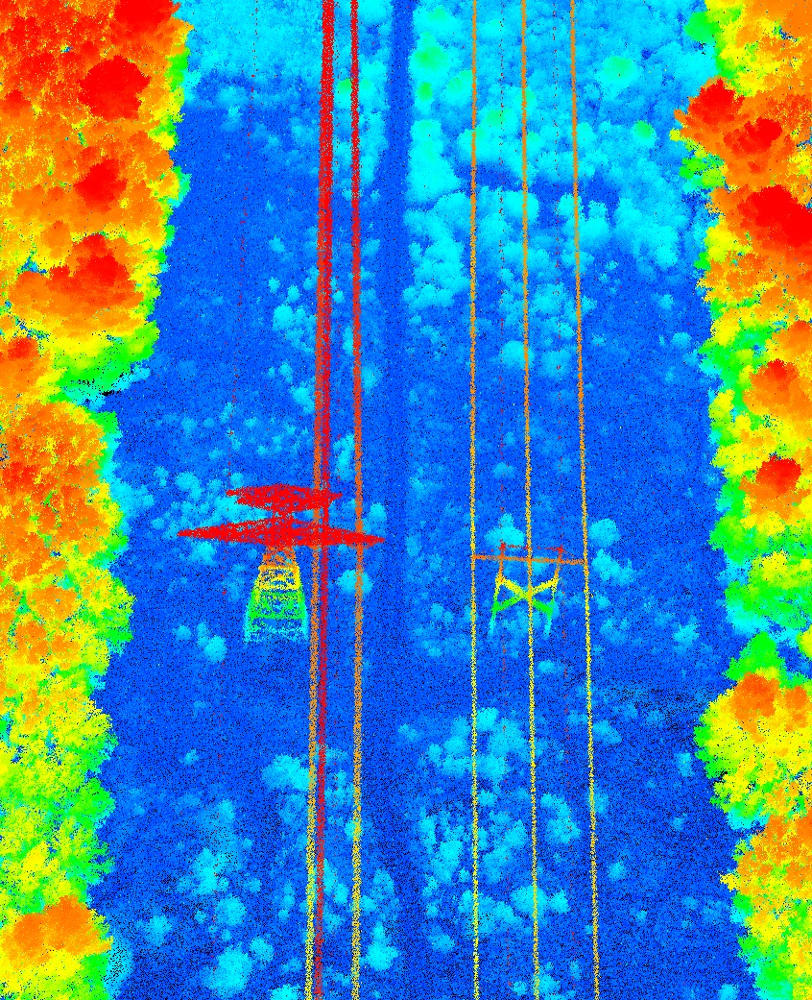

Efficient single-photon sensitivity, high data recording rates, and agile geo-referenced scanning — map faster, at higher resolution, in more detail, all from a single configurable lidar instrument.
We are the trusted advisors of the geospatial industry — guiding partners across every stage of data collection, in every industry, even when they don't yet know what they need.
An MIT Lincoln Laboratory spin-out founded in 2014, headquartered in Norwood, Massachusetts. We design, build, fly, and process airborne Geiger-mode lidar for government and commercial clients worldwide.
About 3DEO →Most of what the industry "knows" comes from early systems that simply fell short. Learn the rest of the story about a technology that's field-proven in military deployments. Our next generation systems are a completely different animal. Here's the honest comparison.
Most providers sell you a box. We meet you wherever you are — and take you all the way to actionable answers. Tell us your stage and we'll point to the best next step.
Scope constraints, timelines, and success criteria with people who've solved it before.
Purpose-built Geiger-mode systems matched to your environment and altitude.
Acquire high-density data where it matters — wide-area, high-altitude, fast.
Acadia turns raw single-photon returns into finished, validated point clouds.
Actionable insights and deliverables in the formats your decision-makers need.

Compact vertical system for unpressurized cabins. 9–12M points/sec.

Pod-mounted horizontal system for operational flexibility. 16–20M points/sec.

Long-standoff, pressurized-cabin system. 20–30M points/sec, 900 km²/hr.

3DEO's processing suite converts raw lidar into finished, high-density point clouds with derived metadata — reflectivity, height above ground, and point confidence. Scalable across laptop, cluster, and cloud. Exports to LAS & GeoTIFF.
Explore Acadia →Explore real 3DEO point clouds. Preview them here, then unlock the full-resolution interactive viewer after a quick confidentiality agreement.



Whatever stage you're in, there's a right next step — and we'll get you exactly what you need.
Talk through environment, constraints, and collection goals.
Book a call →Get representative point clouds for feasibility and workflow review.
Request samples →Define a pilot with timeline, success criteria, and deliverables.
Apply now →